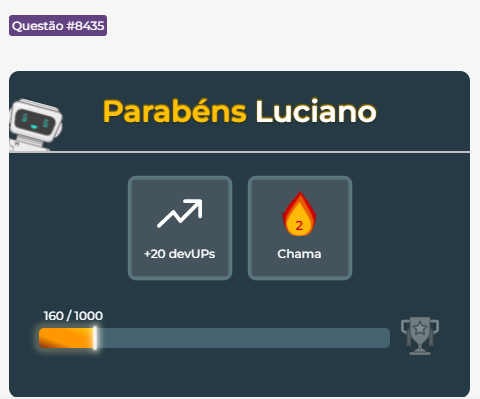

Questão|8435
Estilos para o parágrafo
Qual alternativa que corresponde aos estilos abaixo para o parágrafo?
Tamanho da fonte de 18 pixels
Família de fonte Arial
Cor de texto verde
p {
font-size: 18px;
color: blue;
line-height: 24px;
text-align: justify;
}
